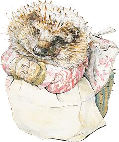

1
Find Peter in the woodlands and fields - can you find him and his friends in the One Tree Hill forest or Carter's Hill? What stories can you remember?
2
Look out for Mr Mcgregor's and greenhouses in the Kettlehill village. Can you see any veg patches or pot plants in the village?
3
Jemima Puddle-Duck is a big fan of water. Can you find somewhere she might like to sit?
4
Jeremy Fisher is often found sititng on his Lily Pad boat. Where might you find lily pads?
5

Mrs Tiggy-winkle's kitchen always smells yummy. Look out for places where other hedgehogs may live. Hedgehogs like to come out at night but you may be lucky!
6
Squrriel Nutkin has friends all over the place - hiding in trees and stealing nuts from bird feeders. How many can you spot?